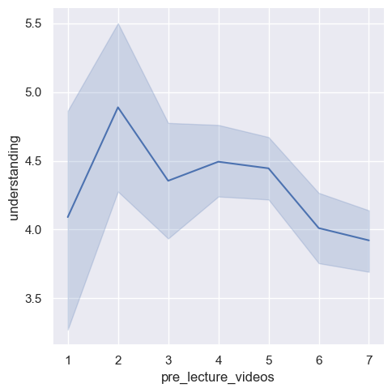
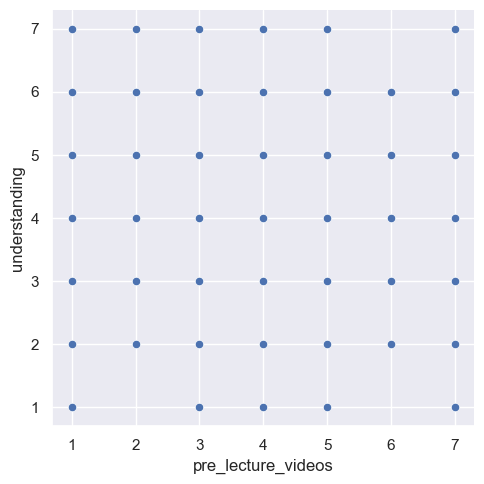
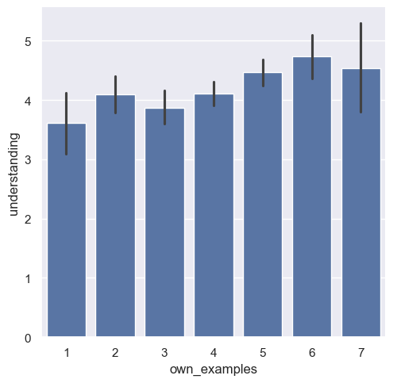

---
# Do not edit the text between these lines!
layout: default
---
# COMP 110 EX09: Data Analysis for Continuous Improvement
 ## Idea
This project explores whether students' perceptions of pre-lecture materials are associated with their self-reported understanding of course content. Although these resources are not currently implemented, the data captures how helpful students believe they would be.
---
## Data Analysis
We used survey data containing student responses about study habits and perceived understanding. The data was transformed using custom utility functions (`read_csv_rows`, `columnar`, `select`, and `convert_columns_to_int`) to allow analysis of relationships between variables.
Key variables analyzed included:
- Pre-lecture videos (perceived usefulness)
- Own notes
- Own examples
- Understanding of course material
---
## Visualizations
### 1. Trend between pre-lecture videos and understanding.
*(Line Graph)*
## Idea
This project explores whether students' perceptions of pre-lecture materials are associated with their self-reported understanding of course content. Although these resources are not currently implemented, the data captures how helpful students believe they would be.
---
## Data Analysis
We used survey data containing student responses about study habits and perceived understanding. The data was transformed using custom utility functions (`read_csv_rows`, `columnar`, `select`, and `convert_columns_to_int`) to allow analysis of relationships between variables.
Key variables analyzed included:
- Pre-lecture videos (perceived usefulness)
- Own notes
- Own examples
- Understanding of course material
---
## Visualizations
### 1. Trend between pre-lecture videos and understanding.
*(Line Graph)*

### 2. Relationship between pre-lecture videos and understanding.
*(Scatterplot)*

### 3. Comparison of using own examples and understanding.
*(Bar Plot)*

---
## Conclusion
The analysis suggests a small positive relationship between perceived usefulness of pre-lecture materials and student understanding. However, the relationship is not strong or consistent across all variables, making the results inconclusive. This indicates that while pre-lecture materials may be beneficial, they are likely only one of several factors influencing student understanding.
A limitation of this analysis is that it relies on self-reported perceptions rather than actual engagement or performance data. Future improvements could include tracking real usage of pre-lecture materials and measuring learning outcomes after implementation.